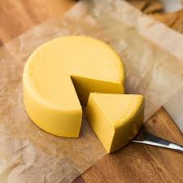

A sajt
A sajt savanyított vagy felfőzött tejből tejsavas erjesztéssel,[1] alvasztással, a savó eltávolításával, préseléssel vagy anélkül készülő étel.[2] Általában tehén, kecske, juh vagy bivaly tejéből készül savanyítással vagy felfőzéssel. A sajttejet általában rövid idejű hőkezeléssel pasztőrözik, amelynek során a patogén mikroorganizmusok elpusztulnak, majd oltóenzimmel és speciális baktériumtenyészettel beoltják, gyakran fűszerezik és érlelik. Az ókortól kezdve világszerte ismert és kedvelt, egészséges tejtermék. A világon több százféle sajtot gyártanak. A fajták elkülöníthetők a tej eredetétől, a vaj zsírtartalomtól, a feldolgozás és az érlelés hosszától stb. függően. A francia étkezési rend, azaz az előétel-főétel-sajt-desszert ételsor kihagyhatatlan fogása a főétel és a desszert között felszolgált sajttál(fromage plateau).